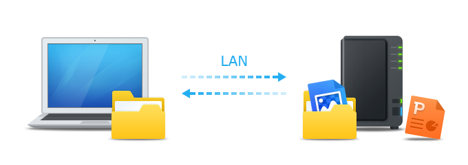
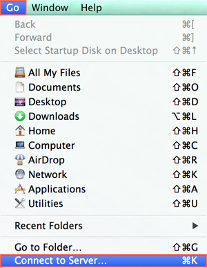
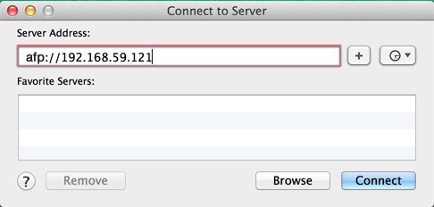
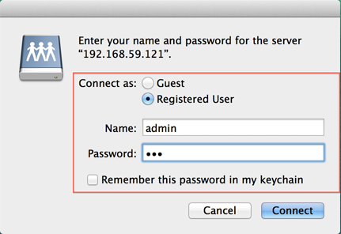
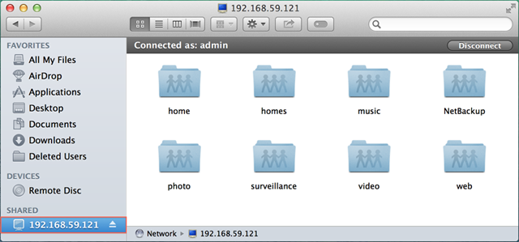

Vue d'ensemble
Le NAS Synology est conçu pour rendre le stockage et le partage de fichiers dans votre réseau local simple et rapide, vous permettant d'accéder directement aux dossiers et fichiers partagés sur le NAS Synology sans les inconvénients d'avoir vous connecter à DSM à chaque fois. Par exemple, vous pourrez stocker les fichiers sur votre NAS Synology avec Finder, tout comme d'autres appareils réseau.
Accéder aux dossiers partagés avec Mac OS
- Ouvrez Finder sur votre ordinateur Mac.
- Trouvez la barre de menus en haut de l'écran.
- Cliquez sur Aller et sélectionnez Se connecter au serveur.

- Entrez l'adresse IP de votre NAS Synology, précédée de "afp://", par exemple, "afp://192.168.59.121". Cliquez sur Connecter pour continuer.

Serveurs favoris : Appuyez sur le bouton du signe plus (+) pour désigner les adresses IP des serveurs préférés pour une utilisation future. En outre, vous pouvez cliquer sur le bouton de l'horloge pour voir une liste de serveurs auxquels vous vous êtes récemment connecté.
- Saisissez votre nom d'utilisateur DSM et votre mot de passe. Votre compte utilisateur doit disposer des privilèges de lecture/écriture appropriés pour le dossier partagé auquel vous souhaitez accéder. Cliquez sur Connecter pour continuer.

- Enfin, si vos identifiants de nom d'utilisateur sont corrects, vous verrez maintenant votre NAS Synology listé dans la section Partagé de votre fenêtre de Finder. Double-cliquez sur le dossier partagé pour explorer son contenu.
